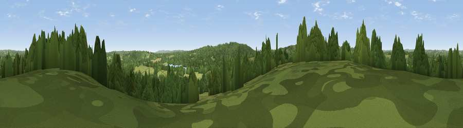

Viewpoint near Brightling
#34755 in England · top 49% of its area beats it · near BrightlingWhere it is
The exact computed spot (TQ 70675 22275). Click the marker for map links.
The view, rendered

A 360° render of this exact spot computed from the terrain model, tree cover and land cover — summer colours, afternoon light, calibrated against photographs of famous viewpoints. Real trees, hedges and buildings will differ in detail.
The panorama
Grey silhouette: terrain skyline in each direction (720 bearings, Earth curvature and refraction included). Dashed green: skyline with trees (+15 m) and buildings (+8 m) as obstacles. Blue strip: how far the ground is visible on each bearing.
Where the view opens
Wedge length = distance to the farthest visible ground on that bearing (vegetation-aware). Rings at 10, 25 and 50 km.
What fills the view
55% woodland · 41% grassland · 2% cropland · 2% water
Angular shares of the visible panorama (visual magnitude), not map area. Landscape diversity 0.38 (0–1 Shannon).
Key numbers
More beautiful places nearby
The staircase of upgrades: each row has a higher view potential than everything closer. Driving times are estimates from straight-line distance, calibrated against real road routing — check an actual route before setting out.
| Place | Direction | Drive | Score |
|---|---|---|---|
| Viewpoint near Netherfield | S · 3 km | ~7 min | 64.5 |
| Brightling Obelisk [Brightling Down] | WSW · 4 km | ~9 min | 69.1 |
| Viewpoint near Three Oaks | SE · 15 km | ~27 min | 69.3 |
| Viewpoint near Hastings | SE · 18 km | ~31 min | 70.5 |
| Viewpoint near Guestling Green | SE · 18 km | ~31 min | 72.2 |
| Viewpoint near Fairlight | SE · 18 km | ~32 min | 74.7 |
| Viewpoint near Fairlight | SE · 19 km | ~32 min | 76.7 |
| Viewpoint near Fairlight | SE · 19 km | ~32 min | 79.0 |
50.97460, 0.42970 · source: screening · position refined by local search. Computed location — check access rights before visiting.